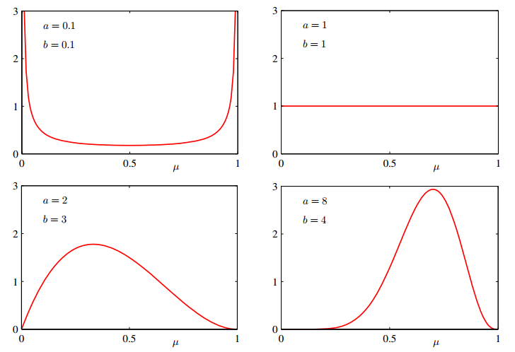
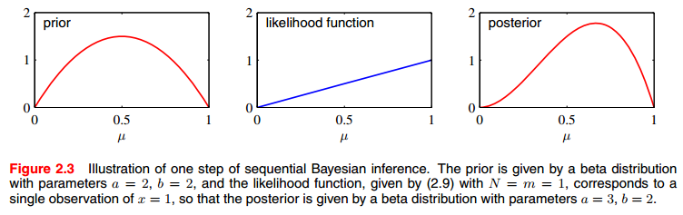
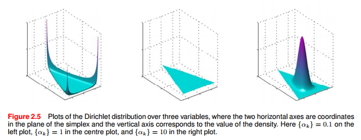

对于参数估计，存在两个学派的不同解决方案。一是频率学派解决方案：通过某些优化准则（比如似然函数）来选择特定参数值；二是贝叶斯学派解决方案：假定参数服从一个先验分布，通过观测到的数据，使用贝叶斯理论计算对应的后验分布。
本文从以参数估计为目标出发，从二项式分布讲述到多项式分布，为使用贝叶斯推断进行参数估计，也讲到了其共轭分布: Beta分布和Dirichlet分布。
Bayesian Inference
贝叶斯学派认为模型中的参数 $\mathrm w$ 是一个不确定的值，使用概率分布对其进行建模。首先我们对$\mathrm{w}$可能的分布做一个假设，这个假设是基于经验的、和观测数据无关的，这个分布即为先验分布$p(\mathrm{w})$。依据训练数据集纠正后的$\mathrm{w}$的概率分布为后验分布$p(\mathrm{w} | D)$。按照贝叶斯公式对后验概率分解，即：
$$
p(\mathrm{w}|\mathcal{D})=\frac{p(\mathcal{D}|\mathrm{w})p(\mathrm{w})}{p(\mathcal{D})}
$$
$\mathrm{w}$的后验分布$p(\mathrm{w}| D)$可以分解为三部分:
- $p(\mathrm{w})$：先验分布（prior），是关于$\mathrm{w}$的函数，依赖于先验知识。
- $p(\mathcal{D}|\mathrm{w}) $：似然函数（likelihood），是关于$\mathrm{w}$的函数。 表示对于$\mathrm{w}$的不同值，数据集$\mathcal D$被观测到的概率。
note，似然函数不是关于$\mathrm{w}$的概率分布函数，所以似然函数对$\mathrm{w}$积分不是1，实际它上是关于$\mathcal D$的概率分布函数。 - $p(\mathcal{D})$ ：归一化项，用于保证公式右边对$\mathrm{w}$积分是1，即，保证后验分布是一个概率密度函数。
$$
p(\mathcal{D})=\int p(\mathcal{D}|\mathrm{w})p(\mathrm{w})\mathrm{dw}
$$
对于固定的数据集$\mathcal D$， $p(\mathcal{D})$是一个常量。所以：
$$
p(\mathrm{w}|\mathcal{D}) \propto p(\mathcal{D}|\mathrm{w})p(\mathrm{w})
$$
二项式分布(Binomial distribution) 与 Beta distribution
二项式分布(Binomial distribution)源自对二元变量的研究。
二元变量(Binary Variables) - Bernoulli distribution
一次贝努力抛硬币实验中有两个结果，我们令$x=1$是正面，$x=0$是反面，令是正面的概率为$\mu$，则有：
$$
p(x=1|\mu) = \mu
$$
则 $x$ 的概率分布可写成如下形式：
$$
p(x|\mu) = \mu^x(1-\mu)^{1-x}
$$
这就是贝努力分布（注意是一次实验），它有均值和方差为：
$$
E[X] = \mu \\
Var[X] = \mu(1-\mu)
$$
现在假定有一个$x$的观测数据集$D={x_1,….,x_N}$，那么我们能够构造出参数$\mu$的似然函数：
$$
P(D|\mu) = \prod_{n=1}^N p(x_n|\mu) = \prod_{n=1}^N \mu^{x_n}(1-\mu)^{1-x_n}
$$
根据频率学派的思路，我们可以通过最大化似然函数来估算出参数$\mu$的值，等价与最大化对数似然函数。贝努力分的对数似然函数为：
$$
\ln P(D|\mu) = \sum_{n=1}^N \ln p(x_n|\mu) = \sum_{n=1}^N x_n \ln \mu + (1-x_n) \ln (1-\mu)
$$
求关于$\mu$的导并将导数设置为0可求得：
$$
\mu_{ML} = \frac{1}{N} \sum_{n=1}^N x_n
$$
上式中去掉前面的$\frac{1}{N}$，右边的式子有个名字叫充分统计量(sufficient statistics)，这里可用 $m$ 表示，即 $N$ 次贝努力实验中 $m$ 次出现“1”. 所以可得到参数 $\mu$ 的最有可能值：
$$
\mu_{ML} = \frac{m}{N}
$$
现在假设 $N=m=3$，那么 $\mu=1$，很明显与我们的经验值不符合，因此在小的的观测数据集下，最大化似然函数的方法容易与观测数据过度拟合。为了解决这个问题，可以根据贝叶斯学派的观点，引入参数的先验概率分布。
二项式分布(Binomial distribution)
在大小为$N$的数据集中（$N$重贝努力实验），以$x=1$的数据出现的次数为随机变量，他服从二项式分布：
$$
Bin(m|N, \mu) = C_N^m \mu^m (1-\mu)^{N-m}
$$
其中：
$$
C_N^m = \frac{N!}{(N-m)!m!}
$$
注意：二项式分布也可以作为参数 $\mu$ 的似然函数。
二项式分布的随机变量的期望和方差如下:
$$
E[m] = \sum_{n=0}^N m Bin(m|N,\mu) = N\mu \\
Var[m] = \sum_{n=0}^N (m-E[m])^2 Bin(m|N, \mu) = N \mu (1-\mu)
$$
Beta 分布
以上介绍了使用最大似然估计的方式求参数$\mu$的方法，那么使用贝叶斯理论需要怎么做呢？
如果用贝叶斯理论求得参数 $\mu$ 的值，需要给 $\mu$ 一个先验分布，然后用贝叶斯理论求$\mu$的后验分布，进而估计$\mu$的值。
根据贝叶斯理论 $后验 \propto 似然函数 \times 先验$，当后验与先验同时具有相同的分布时具有一些优秀的性质，能使我们方便的进行$\mu$的估算。
该选用什么样的分布作为先验分布呢？此处似然函数选用二项式分布的形式，似然函数是$\mu$与$1-\mu$乘积的形式，可以选用了Beta分布作为$\mu$的先验分布，这样可以保证后验分布也是 Beta分布。
Beta分布：
$$
Beta(\mu ;a ,b ) ={\frac {\Gamma (a +b )}{\Gamma (a )\Gamma (b )}} \mu^{a -1}(1-\mu)^{b -1}
$$
其中：
$$
\Gamma (z)=\int_{0}^{\infty }x^{z-1}e^{-x} dx
$$
左边的系数是为了确保beta分布是归一化的:
$$
\int_0^1 Beta(\mu|a,b)du = 1
$$
注意到Beta分布的参数$\mu$随机变量的取值在0到1之间。可求得Beta随机变量的期望和方差：
$$
E[\mu] = \frac{a}{a+b} \\
Var[\mu] = \frac{ab}{(a + b)^2(a+b+1)}
$$
$a$与$b$的值是参数 $\mu$ 的分布中的参数，称之为超参数。

现在，参数的$\mu$的后验分布可以通过似然函数 $Bin(m|N, \mu) = C_N^m \mu^m (1-\mu)^{N-m}$ 乘以先验分布 $Beta(\mu ;a ,b ) ={\frac {\Gamma (a +b )}{\Gamma (a )\Gamma (b )}} \mu^{a -1}(1-\mu)^{b -1}$ 来得到，得到的后验分布只保留与参数$\mu$相关的项得：
$$
p(\mu | l,m,a,b) \propto \mu^{(m+a-1)}(1-\mu)^{(l+b-1)}
$$
其中$l=N-m$ 。（$N$次采样中 $m$ 次为“1”，$l$ 次为“0”），由于贝叶斯方法是新增数据后的迭代过程，其中的四个参数可以这样理解：
- $m$：新数据中 “1” 的次数；
- $l$: 新数据中 “0” 的次数；
- $a$： 历史数据中 “1” 的次数，$a \gets a+m$；
- $b$：历史数据中 “0” 的次数, $b \gets a + l$。
加入归一化系数后得：
$$
p(\mu | l,m,a,b) = \frac{\Gamma(m+a+l+b)}{\Gamma(m+a)\Gamma(l+b)} \mu^{(m+a-1)}(1-\mu)^{(l+b-1)}
$$
可看到后验概率同样是beta分布，当先验和后验是同一分布时，我们称之为共轭。
仔细观测，他拥有优秀的性质：
- 观测以Gamma函数为分子分母的系数，参数a,b可分别看作事件x=1，x=0的有效观测量。a的值通过m的增加而增加，b的值通过l的值增加而增加。
- 如果以后有新增的观测值，后验分布又可作为先验分布来进行计算。具体来讲，在某一个时间点，有一个观测值，此时可以得到后验，之后，每一个观测值的到来，都以之前的后验作为先验，乘以似然函数后，得到修正后的新后验。在这每一步中，其实我们不需要管什么似然函数，只需要更新后验分布公式中的四个参数即可。
下图解释了贝叶斯推断的步骤：
- 
我们可以把上面第二个优秀的性质所表示的方法看作为序列方法（sequential approach），该方法是贝叶斯观点中很自然得到的学习方法。他非常适合实时学习场景。在某一时刻，有一小批量数据，我们可以在这一小批量数据中得到我们的后验分布模型。当有新的一批数据到来时，只需要更新这个模型就够了。注意到，因为这种序列方法不需要将所有数据都载入内存，因此他在大数据的应用将非常有效。
我们的目标是基于一堆观测数据集 $D$ 对将来的一个数据做出预测。如抛硬币实验中，预测下一次实验出现正面的概率是多少 $p(x=1|D)$。使用 sum and product rules 对$p(x=1|D)$分解：
$$
p(x=1|D) = \int_0^1 p(x=1|\mu) p(\mu|D)du = \int_0^1 \mu p(\mu|D)du = E[\mu|D]
$$
即，下一个预测值就是$\mu$的后验分布的期望。根据上文可知Beta分布的期望是 $E[\mu] = \frac{a}{a+b}$。
$$
p(x=1|D) = E[\mu|D] = \frac{m+a}{m+a+l+b}
$$
这个结果是预测的结果，同时也即参数$\mu$的估计值。
总结：
- 贝叶斯学派采用给参数赋予先验分布，并使得先验与后验共轭，通过求后验均值来得到参数的估计。频率学派通过某个优化准则比如最大化似然函数来求得参数的估计。
- 似然函数：他们都要用到似然函数 但形式不同，频率学派所使用的似然函数是N次贝努力实验下的似然函数，但贝叶斯学派所使用的似然函数是二项式分布形式的似然函数（二项式分布是N次贝努力实验中出现事件A的次数的分布）。
- 数据量：当拥有无限数据量时(上式中m和l都趋向于无穷)，贝叶斯方法和频率学派方法所得到的参数估计是一致的。当在有限的数据量下，贝叶斯学派的参数后验均值介于先验均值和频率学派方法得到参数估计值之间。比如在抛硬币实验中，当数据量有限时，先验均值为0.5，后验均值将会比先验大，比频率学派得到参数估计小。
- 方差： 随着观测数据的增多，后验分布曲线越来越陡峭（越来越集中），即方差越来越小（后验方差总比前验方差小），由Beta分布方差可知，当数据量无穷大时，方差趋近于0，即随着数据越来越多，后验的不确定性在减小。
多项式分布与Dirichlet分布
与上一节对应， 多项是分布是二项式分布的推广 。相应的上一节中的几个概念都进行了泛化：
二元变量 -> 多元变量
二项式分布 -> 多项式分布
Beta分布 -> Dirichlet分布
多元变量(Multinomial Variables) - Multinoulli distribution
多项式分布是二项式分布的扩展，在多项式分布所代表的实验中，一次实验会有多个互斥结果，而二项式分布所代表的实验中，一次实验只有两个互斥结果。
假设事件发生有K=6个互斥的结果，如果这$x_3=1$发生了，则：
$$
\mathbf{x} = (0,0,1,0,0,0)^{\mathrm{T}}
$$
这个向量满足：
$$
\sum_{k=0}^K x_k = 1
$$
如果我们用$\mu_k$来表示$x_k=1$的概率，则向量 $\mathbf{x}$ 的分布为：
$$
p(\mathbf{x}|\mathbf{\mu}) = \prod_{k=1}^K \mu_k^{x_k}
$$
其中:
- 这个分布可以被看座是Bernoulli分布在的一般化推广，称为Multinoulli distribution 或者 Categorical Distribution
- 左边的 $\mathbf{x}=(x_1,x_2,\dots,x_K)^{\mathrm{T}}$， 满足 $\sum_k x_k = 1$, 向量中只有一个元素为 “1”， 其他为“0”；
- $\mathbf{\mu} = (\mu_1,\mu_2,\dots,\mu_K)^{\mathrm{T}}$, 且 满足 $\sum_k \mu_k = 1$ ；
- 这个分布的归一化形式为 $\sum_x p(\mathbf{x}|\mathbf{\mu}) = \sum_{k=1}^K \mu_k = 1$。
在已知 $\mu$ 的条件下，向量 $\mathbf{x}$的期望为：
$$
E[\mathbf{x}|\mathbf{\mu}] = \sum_{\mathbf{x}} p(\mathbf{x}|\mathbf{\mu}) \mathbf{x} = (\mu_1,\mu_2,\dots,\mu_K)^{\mathrm{T}} = \mathbf{\mu}
$$
假定有一个样本量为$N$的观测数据集$\mathcal{D} = \{\mathbf{x}_1, \mathbf{x}_2, \dots, \mathbf{x}_N\}$，其中每个样本都服从参数为 $\mathbf{\mu}$ 的分布：
$$
p(\mathbf{x}|\mathbf{\mu}) = \prod_{k=1}^K \mu_k^{x_k}
$$
那么怎么估计参数$\mathbf{\mu}$呢。
首先给出频率学派的求解方式。 该数据集的似然函数为：
$$
\begin{align}
p(\mathcal{D}|\mathbf{\mu}) &= \prod_{n=1}^N \prod_{k=1}^K \mu_k^{x_{nk}} \\
&= \prod_{k=1}^K \mu_k^{(\sum_n x_{nk})} \\
&= \prod_{k=1}^K \mu_k^{m_k}
\end{align}
$$
其中： $m_k = \sum_n x_{nk}$, 为充分统计量(sufficient statistics) 即 在$N$ 个样本中 $x_k = 1$ 的数量。
使用拉格朗日乘数法(Lagrange multiplier)可以最大化对数似然函数：
$$
\begin{align}
\mathcal{L} &= \ln p(\mathcal{D}|\mathbf{\mu}) + \lambda(\sum_x p(\mathbf{x}|\mathbf{\mu}) - 1) \\
&= \sum_{k=1}^K m_k \ln \mu_k + \lambda(\sum_{k=1}^K \mu_k - 1)
\end{align}
$$
可以求得：
$$
\begin{align}
\lambda &= -N \\
\mu_k^{ML} &= -\frac{m_k}{\lambda} = \frac{m_k}{\lambda}
\end {align}
$$
多项分布(Multinomial Distribution)
类似于二项式分布，对于多元变量也可以定义一个多项式分布。即在观测数据集$\mathcal{D}$上多个充分统计量$\{m_1, m_2, \dots, m_K\}$ 的联合分布（即k个不同互斥结果在N次实验中出现次数的联合分布）。其分布函数为：
$$
Mult(m_1, m_2, \dots, m_K | \mathbf{\mu},N) = C_N^{m_1 m_2 \dots m_K} \prod_{k=1}^K \mu_k^{m_k}
$$
其中：
- $C_N^{m_1 m_2 \dots m_K} = \frac{N!}{m_1!m_2!\dotsm_K!}$；
- $\sum_{k=1}^K = N$
和二项式分布可以作为作为似然函数一样，多项式分布也作为似然函数
Dirichlet分布
为求得参数向量$\mathbf{\mu}$的值，根据贝叶斯学派的观点，我们要引入$\mathbf{\mu}$的先验。为了方便求解也需要使先验和后验共轭。同样，通过观察多项式分布似然函数的形式，先验分布为如下形式时可满足共轭的条件：
$$
p(\mathbf{\mu}|\mathbf{\alpha}) \propto \sum_{k=1}^K \mu_k^{\alpha_k -1}
$$
其中： $\mathbf{\alpha} = (\alpha_1, \alpha_2, \dots \alpha_K)^{\mathrm{T}}$ 为分布的参数。
分布 $p(\mathbf{\mu}|\mathbf{\lambda})$ 需要满足条件 $\int_{\mu} p(\mathbf{\mu}|\mathbf{\lambda}) = 1$, 加入归一化项, 可得到Dirichlet分布:
$$
\mathrm{Dir}(\mathbf{\mu}|\mathbf{\alpha}) = \frac{\Gamma(\alpha_0)}{\Gamma(\alpha_1)\dots\Gamma(\alpha_K)} \prod_{k=1}^K \mu_k^{\alpha_k -1}
$$
其中:
- $\alpha_0 = \sum_{k=1}^K \alpha_k $,
- $\Gamma (z)=\int_{0}^{\infty }x^{z-1}e^{-x} dx$为Gamma函数.
下图展示了 $K=3$ 时, 在${\alpha_k}=0.1$, ${\alpha_k}=1$, ${\alpha_k}=10$ 取三个不同值时Dirichlet分布函数的图形.

Dirichlet分布定义的先验分布 乘以 多项式分布形式似然函数，可得参数$\mathbf{\mu}$的后验分布：
$$
p(\mathbf{\mu} | \mathcal{D},\mathcal{\alpha}) \propto p(\mathcal{D}|\mathbf{\mu}) p(\mathbf{\mu} | \mathcal{\alpha}) \propto \prod_{k=1}^K \mu_k^{\alpha_k + m_k -1}
$$
可以看到后验分布也是Dirichlet分布的形式. 加入归一化项后验分布可以表示为:
$$
\begin{align}
p(\mathbf{\mu} | \mathcal{D},\mathcal{\alpha}) &= \mathrm{Dir}(\mathbf{\mu}|\mathbf{\alpha} + \mathbf{m}) \\
&= \frac{\Gamma(\alpha_0) + N}{\Gamma(\alpha_1 + m_1)\dots\Gamma(\alpha_K + m_K)}\prod_{k=1}^K \mu_k^{\alpha_k + m_k -1}
\end{align}
$$
其中: $\mathbf{m}=(m_1, m_2, \dots, m_K)^{\mathrm{T}}$.
类似于beta后验把a,b当成x=1和x=0的有效观测量一样，我们也可以把$\alpha_k$当着是$x_k=1$事件的观测量，即$\alpha_k$的值通过$m_k$值增加而增加。
参考资料
Christopher M Bishop. Pattern Recognition and Machine Learning (Information Science and Statistics)[M]. 2006.